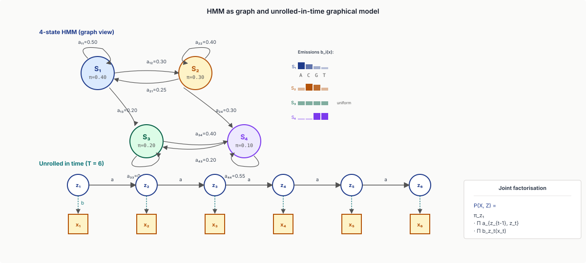
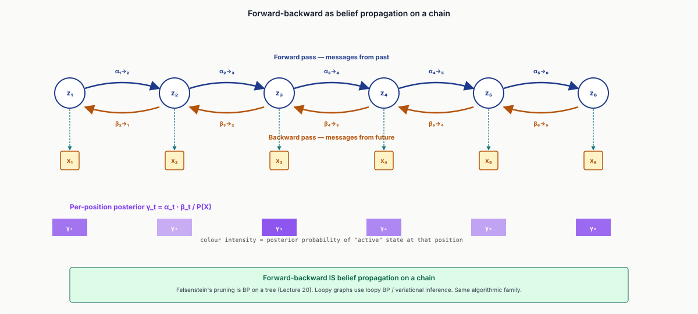
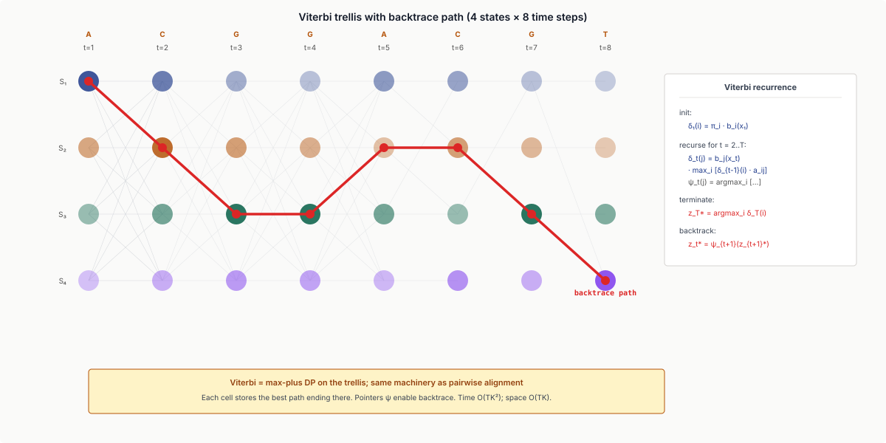
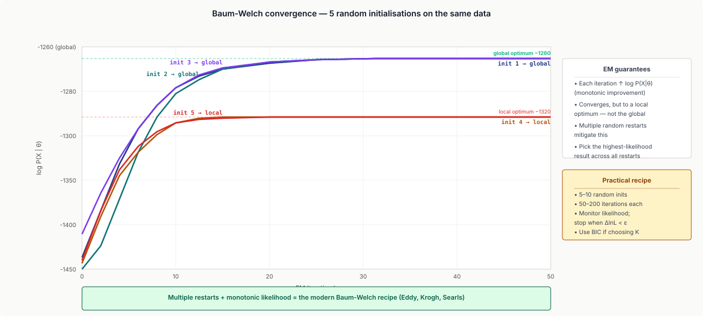
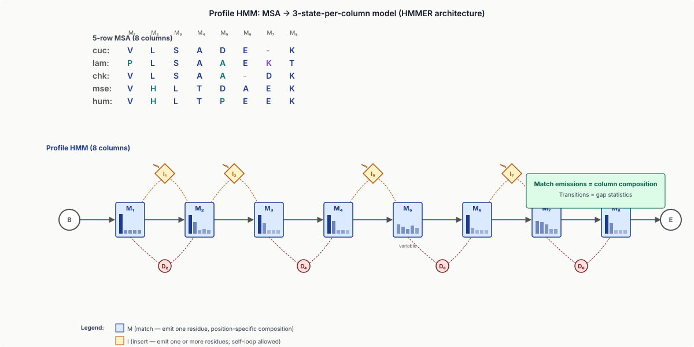
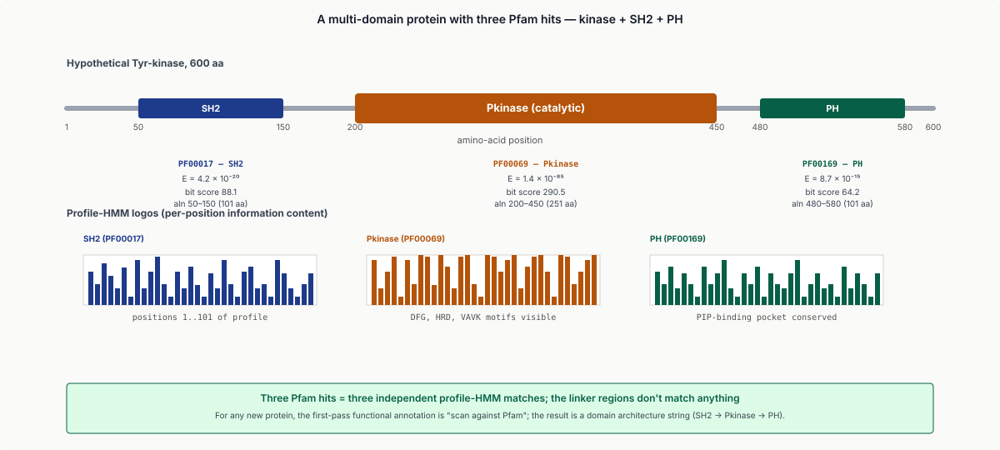
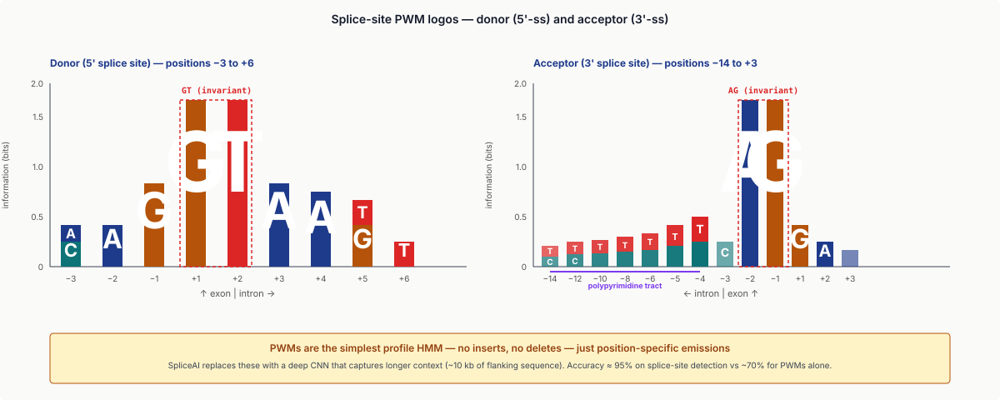
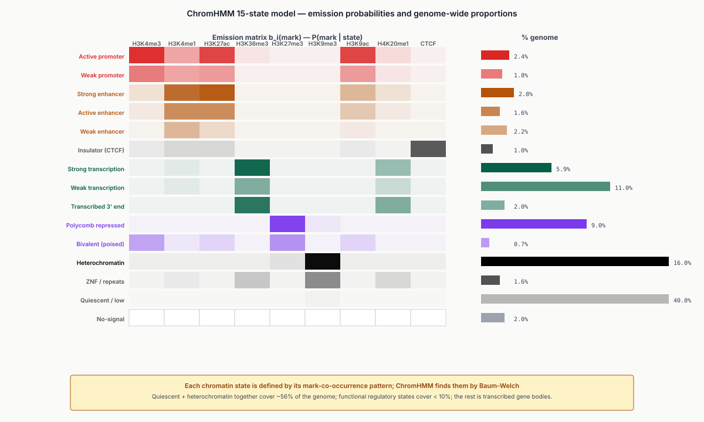
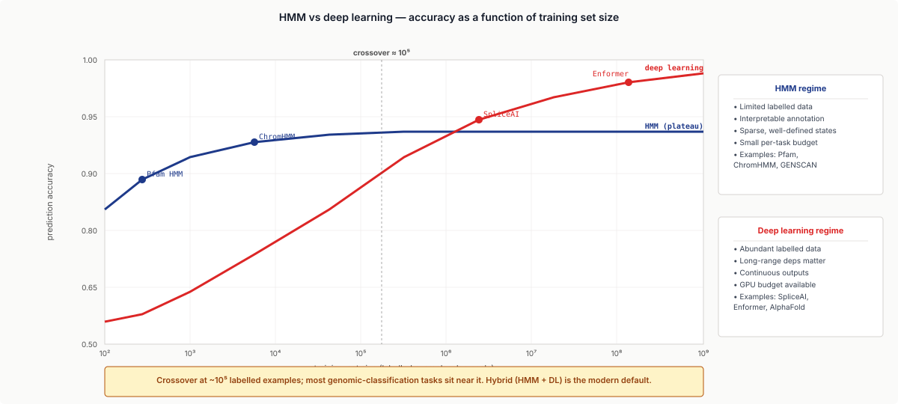
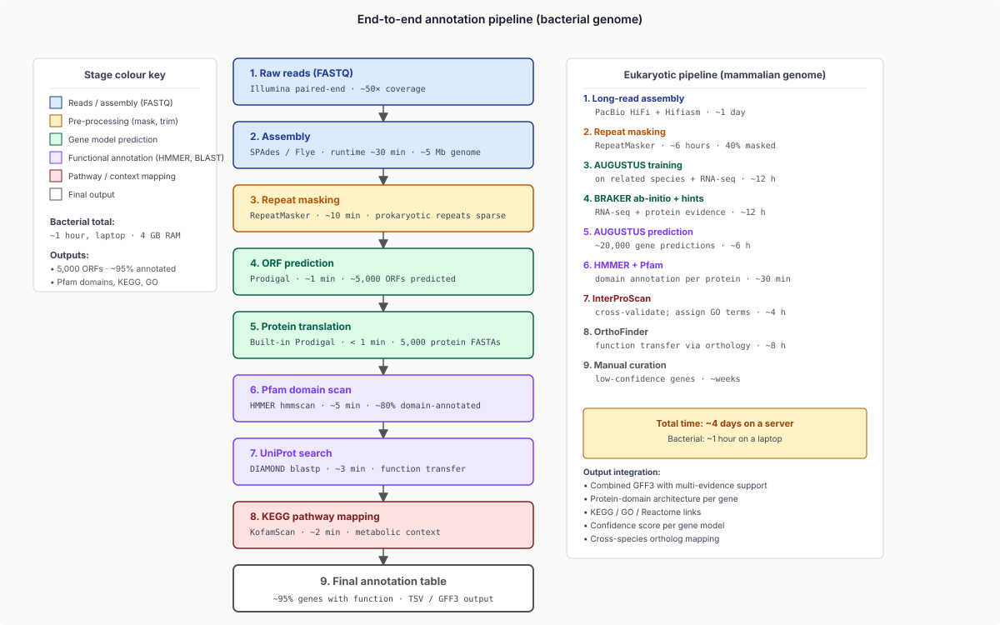

Five moves: add latent state to a Markov chain, forward for likelihood, Viterbi for decoding, Baum-Welch for training, profile-HMM the MSA.
Learning objectives
- Define a Hidden Markov Model: states, transitions, emissions, initial distribution; explain why the Markov assumption holds in genomic segmentation and how it breaks for long-range dependencies.
- Solve the three canonical HMM problems: forward / backward (likelihood), Viterbi (decoding), Baum-Welch (EM training); recognise EM and belief propagation as the underlying machinery.
- Construct profile HMMs from MSAs (HMMER, Pfam): match, insert, delete states; the 3-state-per-column architecture and its connection to dynamic time warping.
- Apply profile HMMs to remote-homology detection; interpret HMMER output (sequence and domain E-values; bit scores; bias correction).
- Walk through eukaryotic gene finding (GENSCAN, AUGUSTUS): exon / intron / splice / UTR states; the role of length distributions and CRF extensions.
- Connect HMMs to chromatin segmentation (ChromHMM), splice-aware alignment (HISAT2 graph extensions), and the Viterbi-on-DAG of pangenome alignment.
- Recognise modern alternatives — CRFs, RNNs, transformers — and where HMMs still win: limited training data, interpretable annotation, sparse-state inference.
Part 1 · 30 min HMM Foundations
1.1 Why Markov chains aren't enough
A Markov chain on observations: $P(x_t \mid x_{t-1}, x_{t-2}, ..., x_1) = P(x_t \mid x_{t-1})$. The next observation depends only on the current one.
For DNA, this is too weak. A CpG island's "C is followed by G more often than chance" pattern requires distinguishing two regimes — inside-CpG-island vs outside — that a single Markov chain on letters cannot represent. The chain has one transition matrix; we need two.
The fix: introduce a latent state that captures "which regime are we in?". Now:
- Latent state $z_t$ at each position, with a Markov transition $P(z_t \mid z_{t-1})$.
- Observation $x_t$ depends on the state via emission $P(x_t \mid z_t)$.
This is a Hidden Markov Model.
1.2 The HMM definition
Formally:
- States $\{S_1, ..., S_K\}$.
- Initial distribution $\pi_i = P(z_1 = S_i)$.
- Transition probabilities $a_{ij} = P(z_t = S_j \mid z_{t-1} = S_i)$.
- Emission probabilities $b_i(x) = P(x_t = x \mid z_t = S_i)$.
- Observations $X = x_1, ..., x_T$; latent states $Z = z_1, ..., z_T$.
Parameters: $\theta = (\pi, a, b)$. Joint probability:
$$P(X, Z \mid \theta) = \pi_{z_1} \prod_{t=2}^{T} a_{z_{t-1}, z_t} \prod_{t=1}^{T} b_{z_t}(x_t)$$

1.3 The three canonical problems
Given an HMM, three things you might want:
- Likelihood: $P(X \mid \theta)$. How probable is this observation? Solved by the forward algorithm.
- Decoding: $\arg\max_Z P(Z \mid X, \theta)$. What is the most probable state sequence? Solved by Viterbi.
- Training: $\arg\max_\theta P(X \mid \theta)$. Given observations only, learn the parameters? Solved by Baum-Welch (EM).
Each runs in $O(T K^2)$ time — efficient for small $K$ and any $T$.
1.4 The CpG island example
The canonical first example. CpG dinucleotides are rare in mammalian DNA because methylated cytosine spontaneously deaminates to thymine. But CpG islands — short genomic regions with elevated CpG density — survive because they're typically unmethylated and functional (often near promoters).
Two-state HMM:
- State 1 — "CpG island" (high CpG dinucleotide frequency).
- State 2 — "background" (low CpG frequency).
Transitions: small probability of switching states (islands are rare); high self-transition (once inside an island, you stay for a few hundred bp).
Emissions: 16 dinucleotide probabilities per state.
Train on labelled data → run Viterbi on a new genome → get a CpG-island annotation.
This pattern — two-or-more state HMM + Viterbi → segmentation — recurs throughout genomics: ChromHMM (15+ chromatin states), gene finders (intergenic / exon / intron), peak callers with HMM extensions, copy-number callers.
1.5 The deep dive
Part 2 · 45 min The Three HMM Algorithms
2.1 Forward algorithm
Goal: compute $P(X \mid \theta) = \sum_Z P(X, Z \mid \theta)$.
Naive sum over $K^T$ state paths is exponential. Forward DP collapses it.
Define $\alpha_t(i) = P(x_1, ..., x_t, z_t = S_i \mid \theta)$. Then:
- Initialise: $\alpha_1(i) = \pi_i b_i(x_1)$.
- Recurse: $\alpha_t(j) = b_j(x_t) \sum_i \alpha_{t-1}(i) a_{ij}$.
- Terminate: $P(X \mid \theta) = \sum_i \alpha_T(i)$.
$O(T K^2)$ time, $O(T K)$ space. The recurrence sums over all paths into state $j$ at time $t$.
2.2 Backward algorithm
Symmetric. Define $\beta_t(i) = P(x_{t+1}, ..., x_T \mid z_t = S_i, \theta)$.
- Initialise: $\beta_T(i) = 1$.
- Recurse: $\beta_t(i) = \sum_j a_{ij} b_j(x_{t+1}) \beta_{t+1}(j)$.
Combined with forward, the per-position posterior is
$$P(z_t = S_i \mid X, \theta) = \frac{\alpha_t(i) \beta_t(i)}{P(X \mid \theta)}.$$
This posterior decoding gives a per-position confidence — useful when you don't want the single most-probable path but rather "how likely is each state at each position?"

2.3 Viterbi algorithm
Goal: $\arg\max_Z P(Z, X \mid \theta)$ — the most probable state sequence.
Define $\delta_t(i) = \max_{z_1, ..., z_{t-1}} P(z_1, ..., z_{t-1}, z_t = S_i, x_1, ..., x_t \mid \theta)$.
- Initialise: $\delta_1(i) = \pi_i b_i(x_1)$.
- Recurse: $\delta_t(j) = b_j(x_t) \max_i [\delta_{t-1}(i) a_{ij}]$.
- Backtrack: store $\arg\max$ pointers; trace from $\arg\max_i \delta_T(i)$.
The forward algorithm sums over paths; Viterbi maxes over them. Both run $O(T K^2)$.
In log space (to avoid underflow):
$$\log \delta_t(j) = \log b_j(x_t) + \max_i \big[\log \delta_{t-1}(i) + \log a_{ij}\big]$$
This is max-plus DP. A pure Viterbi computation is structurally identical to log-domain pairwise alignment — pairwise alignment IS Viterbi on a trivial 1-state-per-residue HMM with explicit gap states.

2.4 Baum-Welch (EM training)
Given observations $X$ but no labels $Z$, learn $\theta$.
EM iterates:
- E-step: compute posterior expectations $\gamma_t(i) = P(z_t = S_i \mid X, \theta)$ and $\xi_t(i, j) = P(z_t = S_i, z_{t+1} = S_j \mid X, \theta)$ via forward-backward.
- M-step: re-estimate $$\hat{\pi}_i = \gamma_1(i), \quad \hat{a}_{ij} = \frac{\sum_t \xi_t(i, j)}{\sum_t \gamma_t(i)}, \quad \hat{b}_i(x) = \frac{\sum_{t: x_t = x} \gamma_t(i)}{\sum_t \gamma_t(i)}.$$
Converges monotonically in $\log P(X \mid \theta^{(k)})$ — that's the EM guarantee. But to a local optimum. Initialisation matters; multiple random restarts are standard.

2.5 The connection to belief propagation
Forward-backward IS belief propagation on the chain-structured graphical model that defines an HMM. The forward pass computes "messages from past"; the backward pass computes "messages from future"; their product gives the per-position posterior.
The connection is exact. Forward-backward is BP on a chain. Felsenstein's pruning (Lecture 20) is BP on a tree. The HMM and the phylogenetic tree differ only in graph structure — algorithmically, they're the same family.
2.6 Practical tips
- Log space everything. Probabilities multiply across long sequences and underflow in floating point within a few hundred steps. Store log-probabilities; replace multiply with add and use the log-sum-exp trick for sums.
- Pseudocounts. Avoid zero probabilities in $a$ and $b$ from rare states (Laplace smoothing or a Dirichlet prior). A zero is forever in maximum likelihood.
- Multiple Baum-Welch restarts. EM is local. 5–10 random initialisations is standard; pick the highest-likelihood run.
- Hyperparameter $K$ (state count). Cross-validation, BIC, or AIC. BIC is the safer default for HMM model selection because it penalises additional states more heavily and tends to recover the right $K$ on simulated data.
Part 3 · 35 min Profile HMMs and HMMER
3.1 The profile-HMM idea
A profile HMM is an HMM whose state structure encodes an MSA:
- One match (M) state per column of the MSA.
- One insert (I) state per inter-column gap.
- One delete (D) state per column allowing it to be skipped.
Match-state emissions reflect the column's amino-acid composition; transition probabilities reflect the gap statistics of the input MSA. The result: a probabilistic model of a protein family that scores any new sequence by Viterbi alignment.
3.2 The Krogh-Mian-Mitchison architecture
The standard profile-HMM topology (Krogh, Mian, Sjölander, Haussler 1994):
- M (match): position-specific emission of an amino acid.
- I (insert): position-specific insertion of one or more amino acids; self-loop allowed.
- D (delete): position skipped (no emission).
- B (begin), E (end): terminal states.
Transitions are tightly constrained: from $M_k$ you can go to $M_{k+1}$, $I_k$, or $D_{k+1}$. From $I_k$, you can go to $M_{k+1}$, $I_k$ (self-loop), or $D_{k+1}$. From $D_k$, $M_{k+1}$, $D_{k+1}$, or $I_k$. This 3-state-per-column structure is the canonical profile-HMM topology.

3.3 HMMER
HMMER (Eddy 1998, 2011) is the dominant profile-HMM software.
hmmbuild: from an MSA → a profile HMM.hmmsearch: query a profile HMM against a sequence database.hmmscan: query a sequence against a database of profile HMMs.nhmmer: nucleotide variant (non-coding RNA detection, regulatory motif scanning).
Output:
- Sequence E-value: probability the entire sequence is from a random null model.
- Domain E-value: probability for the specific domain alignment.
- Bit score: log-odds of model vs null.
- Bias correction: adjusts for compositionally-biased queries (similar to BLAST's composition correction in Lecture 19).
3.4 The Pfam database
Pfam (Bateman et al. 2002, Mistry et al. 2021, now hosted at InterPro): a curated database of ~20,000 protein families. Each family has:
- A seed alignment — a manually curated MSA of representative sequences.
- A full alignment — HMMER auto-aligned to all UniProt sequences with $E < 10^{-3}$.
- A profile HMM built from the seed.
- Metadata: function, GO terms, structural classification, key literature.
Pfam profile HMMs are the default first-pass for protein-domain annotation. When you assemble a new genome and translate ORFs, your first protein-level annotation is "scan against Pfam".
3.5 Worked example
A 600-residue kinase has three Pfam domains: an SH2 (~aa 50–150), a kinase domain (~aa 200–450), and a PH domain (~aa 480–580). Each is a separate Pfam profile-HMM hit; the linker regions don't match anything. The three domains are the protein's functional building blocks; the linker is structurally flexible.

3.6 The deep dive
Part 4 · 40 min Gene Finding
4.1 The eukaryotic gene-finding problem
Given an assembled eukaryotic genome (~3 Gbp for human), find:
- Gene boundaries (start and stop).
- Exon-intron structure.
- Coding (CDS) regions, in the right reading frame.
- 5'/3' untranslated regions (UTRs).
- Sometimes: promoter regions.
This is harder than prokaryotic gene finding (where coding density is near-uniform and there are no introns), because eukaryotic genes are sparse, fragmented, and overlap with regulatory elements.
4.2 GENSCAN
GENSCAN (Burge & Karlin 1997) is the canonical statistical gene finder. Architecture: a giant HMM with state classes:
- Intergenic (single state).
- Promoter / 5'-UTR states.
- Initial exon (with start-codon emission).
- Internal exon states.
- Final exon (with stop-codon emission).
- Single-exon gene state.
- Intron-phase 0/1/2 states (codon frame can be 0, 1, or 2 across an intron).
- 3'-UTR + polyadenylation signal states.
Each state has its own length distribution (geometric for introns, gamma for exons). Emission probabilities reflect codon usage, splice-site consensus sequences, and CpG-island context. Viterbi decoding on this HMM produces a complete gene-structure annotation.

4.3 Splice site detection
A critical sub-problem: identify donor (5') and acceptor (3') splice sites within introns.
- Donor: GT consensus at intron start (positions +1 and +2 of the intron).
- Acceptor: AG consensus at intron end, with a polypyrimidine tract upstream.
These are detected by position-specific weight matrices (PWMs) on a small window around each candidate site. The PWM is exactly a profile HMM with no inserts or deletes — the simplest case. Modern tools layer deep learning (SpliceAI) on top of PWM-style models for higher precision.

4.4 AUGUSTUS
AUGUSTUS (Stanke et al. 2003-2008) is the modern eukaryotic gene finder. Improvements over GENSCAN:
- Conditional Random Field (CRF) version: more flexible than HMM; conditions on observations rather than generative joint.
- Hint integration: external evidence (RNA-seq alignments, protein homologs, conservation tracks) folded into the scoring.
- Iterative training: bootstraps from an initial gene set on a related species and refines on the new genome.
For a new mammalian genome, AUGUSTUS + RNA-seq hints is the standard.
4.5 RNA-seq-driven annotation
A modern approach: train the gene finder on the genome's own RNA-seq data.
- Map RNA-seq reads to the genome (HISAT2 / STAR — Lecture 5).
- Assemble transcripts (StringTie / Cufflinks).
- Use the assembled transcripts as a training set for AUGUSTUS / BRAKER.
- Run the gene finder; integrate predicted gene models with transcript evidence.
Output: a gene set that is both algorithmically predicted and experimentally supported.
4.6 Prokaryotic gene finding
Simpler than eukaryotic: most prokaryotic genes are continuous (no introns), gene density is high (~1 gene / kb), and start codons are well-conserved.
Tools: GeneMark, Glimmer, Prodigal. Shorter HMMs with codon-frequency emissions; runs in minutes on a typical bacterial genome (~5 Mb).
For metagenomics (mixed organisms), MetaGeneMark and Prodigal-meta handle community-level gene finding.
Part 5 · 25 min HMM Applications Beyond Gene Finding
5.1 ChromHMM
ChromHMM (Ernst & Kellis 2012) is epigenome segmentation. A multi-mark HMM integrates ChIP-seq tracks for several histone modifications and calls distinct chromatin states. A typical 15-state model:
- Active promoter (high H3K4me3, H3K27ac).
- Active enhancer (H3K4me1, H3K27ac).
- Strong / weak enhancers (additional marks).
- Insulator (CTCF-bound).
- Strong transcription (H3K36me3 in gene bodies).
- Polycomb-repressed (H3K27me3).
- Heterochromatin (H3K9me3).
- Quiescent (low signal across all marks).
Each state has emission probabilities for each histone mark; the HMM is trained by Baum-Welch on whole-genome ChIP-seq from many marks. Practical: download ChromHMM, run on your own ChIP-seq data, get a chromatin-state segmentation. Used in ENCODE, Roadmap Epigenomics — connects directly to the ChIP-seq lecture.

5.2 Splice-aware alignment in HISAT2
HISAT2 uses an HMM extension for splicing:
- Reads can span an intron.
- The aligner treats intron states as "skip-no-emission" states in a graph-aware HMM.
- Splice junctions are scored by a junction likelihood (combining donor / acceptor PWM scores with intron-length priors).
This is the engine behind RNA-seq alignment in modern pipelines (Lecture 5).
5.3 Pair-HMMs in variant calling
GATK HaplotypeCaller (Lecture 4) computes per-read alignment likelihood via a pair-HMM — a 3-state HMM for matches, insertions, and deletions in pairwise alignment.
Pair-HMMs handle indel-aware alignment with explicit gap-open / gap-extend transitions; they're the basis of all modern haplotype-based variant callers. DeepVariant runs a CNN on pair-HMM-aligned pileups.
![Pair-HMM state diagram with three states: Match in cobalt, Insert in amber, Delete in green. Edges: M to M with probability 1 minus 2 delta minus tau (continue match); M to I with probability delta (open insertion); M to D with probability delta (open deletion); I to I with probability epsilon (extend insertion); I to M with probability 1 minus epsilon; D to D with probability epsilon (extend deletion); D to M with probability 1 minus epsilon; M to END with probability tau. Annotation: pair-HMM is the engine behind GATK HaplotypeCaller and DeepVariant.](../diagrams/lecture-21/10-pair-hmm.svg)
5.4 Connection to Viterbi-on-DAG
A future lecture (long reads + pangenome) will introduce Viterbi on a DAG — alignment of a long read to a pangenome graph. The same machinery: states = positions in the graph; transitions = edges. The HMM background you have here makes Viterbi-on-DAG immediately interpretable.
5.5 What HMMs can't do
HMMs assume:
- Markov property: state depends only on previous state. Long-range dependencies (e.g., trans-splicing across a 100 kb intron) violate this.
- Conditional independence: emissions are independent given state. Real dependencies (e.g., codon-context correlations spanning multiple sites) are imperfectly captured.
- Discrete state space: continuous variables (e.g., expression levels) need extension to GMM-HMM or autoregressive HMM.
For genomic segmentation, these are mostly fine. For natural language and music, transformers replaced HMMs because long-range dependencies dominate. Genomics is in the middle: HMMs still dominate gene finding and chromatin segmentation; transformers are gaining ground on regulatory prediction (Enformer).
Part 6 · 20 min Modern Alternatives and the HMM Niche
6.1 CRFs
Conditional Random Fields generalise HMMs by removing the generative assumption:
- HMM models $P(X, Z)$.
- CRF models $P(Z \mid X)$ directly.
CRFs allow rich feature functions on observations without the conditional-independence constraint. AUGUSTUS uses a CRF for gene finding; Segway is a CRF chromatin-state caller.
6.2 Deep learning replacements
For sequence-classification tasks, RNNs and transformers have largely replaced HMMs:
- SpliceAI — deep CNN on splice-site detection.
- DeepBind / DeepSEA — CNN on transcription-factor binding.
- Enformer / Borzoi — dilated CNN + transformer on regulatory sequence.
These models have higher accuracy at scale but are less interpretable and require much more training data.
6.3 The HMM niche
HMMs still win for:
- Small training data: a handful of labelled examples (a new pathogen's gene structure) trains a robust HMM but a flaky deep model.
- Interpretable annotation: each state needs a human-readable label.
- Sparse-state inference: most positions belong to one of a few well-defined states (chromatin segmentation, gene segmentation).
- Deterministic decoding: when you need a single most-probable assignment, not a probability distribution.

6.4 The hybrid future
Most modern bioinformatics pipelines use HMMs + deep learning hybrids:
- HMM segments first; deep learning refines per-state predictions.
- Or: deep learning extracts features; HMM provides a calibrated state assignment with a length prior.
Examples: BRAKER (AUGUSTUS HMM + deep learning hints), DeepHMM (deep emissions on classical HMM topology), HMMRATAC (HMM segmentation on ATAC-seq with deep features).
Part 7 · 20 min Worked End-to-End Example
7.1 Annotating a new bacterial genome
A typical 2024 workflow:
- Assemble reads to contigs.
- Run Prodigal for prokaryotic gene finding. Get ~5,000 ORF predictions on a 5 Mb genome.
- Translate ORFs to protein sequences.
- HMMER scan against Pfam for domain assignment. ~80% of ORFs annotated.
- DIAMOND BLAST against UniProt for the rest. Get function transfer for ~90% of ORFs.
- Map to KEGG pathways for metabolic context.
- Final gene set with ~95% functional annotation.
Total runtime: hours on a laptop.

7.2 Annotating a new mammalian genome
For a 3 Gbp mammalian genome:
- Assemble with long reads (a future lecture).
- Repeat-mask with RepeatMasker (~40% of the genome).
- Train AUGUSTUS on a related species' gene set as a starting point.
- Run BRAKER with your own RNA-seq data → trained eukaryotic gene model.
- Run AUGUSTUS on the masked genome → ~20,000 gene predictions.
- Validate with HMMER/Pfam for domain annotation; cross-check with InterProScan.
- Assign function via ortholog identification (OrthoFinder against UniProt).
Total runtime: days on a server.
7.3 The 2024 frontier
- DeepBind / DeepSEA for regulatory annotation — replace pure-HMM regulatory state inference with deep models.
- AlphaFold-driven annotation for protein function — predict structure, then infer function from structural homologs.
- Metagenomic gene callers (MetaProdigal, Prokka) for community-level annotation.
The HMM-driven core (Pfam, AUGUSTUS, ChromHMM) remains the foundation; deep learning is layered on top.
Wrap-up
What you should take away
- HMMs are state-space models on discrete observations. Three algorithms — forward (likelihood), Viterbi (decoding), Baum-Welch (training) — each $O(T K^2)$.
- Profile HMMs operationalise MSA → probabilistic family. HMMER + Pfam are the workhorses for protein-domain annotation.
- Gene finding is HMM-driven. GENSCAN architecture: state classes for intergenic, promoter, exon-initial / internal / final, intron-phase 0/1/2, UTR. AUGUSTUS adds CRF + RNA-seq hints.
- HMM applications beyond gene finding: ChromHMM (chromatin segmentation), pair-HMMs (variant calling), splice-aware alignment, Viterbi-on-DAG (pangenome alignment).
- Modern alternatives (CRFs, RNNs, transformers) have replaced HMMs in regulatory prediction but not in segmentation tasks. The HMM niche is interpretable annotation, small training sets, and sparse states.
- EE framings: HMMs as state-space models; forward-backward as belief propagation; Viterbi as MAP decoding; profile HMMs as position-specific filters with gap states; Baum-Welch as EM.
Next lecture
Bulk RNA-seq: from reads to expression counts. The splice-aware alignment in HISAT2 you saw mentioned here is what does the heavy lifting.
Homework
- Build a 2-state HMM for CpG islands. Run Viterbi on a synthetic 10 kb sequence; identify the islands. Compute precision/recall against ground truth.
- Run HMMER on a protein sequence of your choice against Pfam (web service or local). Report all domain hits with $E < 10^{-3}$ and note alignment quality.
- Use AUGUSTUS to predict genes on a 100 kb genomic region of your choice. Compare predictions to existing annotations; report concordance.
- Implement Baum-Welch in Python for a 3-state HMM. Train on synthetic data; verify the recovered transitions and emissions match the generating process. (~50 lines.)
- Pick a chromatin state from a ChromHMM-annotated genome (e.g., ENCODE H1 ESC). Compute the genome-wide proportion of bases in that state; compare to published numbers.
Recommended reading
- Eddy, S. R. (1998). Profile hidden Markov models. Bioinformatics 14, 755–763.
- Eddy, S. R. (2011). Accelerated profile HMM searches. PLoS Computational Biology 7, e1002195.
- Krogh, A., Brown, M., Mian, I. S., Sjölander, K., & Haussler, D. (1994). Hidden Markov models in computational biology: applications to protein modeling. Journal of Molecular Biology 235, 1501–1531.
- Burge, C., & Karlin, S. (1997). Prediction of complete gene structures in human genomic DNA. Journal of Molecular Biology 268, 78–94.
- Stanke, M., & Waack, S. (2003). Gene prediction with a hidden Markov model and a new intron submodel. Bioinformatics 19, ii215–ii225.
- Ernst, J., & Kellis, M. (2012). ChromHMM: automating chromatin-state discovery and characterization. Nature Methods 9, 215–216.
- Mistry, J., Chuguransky, S., Williams, L., et al. (2021). Pfam: the protein families database in 2021. Nucleic Acids Research 49, D412–D419.
- Rabiner, L. R. (1989). A tutorial on hidden Markov models and selected applications in speech recognition. Proceedings of the IEEE 77, 257–286. (Classic; still excellent.)
- HMMER: hmmer.org
- Pfam (now at InterPro): ebi.ac.uk/interpro
- AUGUSTUS: bioinf.uni-greifswald.de/augustus
- ChromHMM: compbio.mit.edu/ChromHMM
Appendix — timing summary
| Block | Time | Cumulative |
|---|---|---|
| Part 1 — HMM Foundations | 30 min | 0:30 |
| Part 2 — The Three HMM Algorithms | 45 min | 1:15 |
| Part 3 — Profile HMMs and HMMER | 35 min | 1:50 |
| Part 4 — Gene Finding | 40 min | 2:30 |
| Part 5 — HMM Applications Beyond Gene Finding | 25 min | 2:55 |
| Part 6 — Modern Alternatives and the HMM Niche | 20 min | 3:15 |
| Part 7 — Worked End-to-End Example | 20 min | 3:35 |
| Wrap-up | 10 min | 3:45 |
Total: ~3h 45min of content.